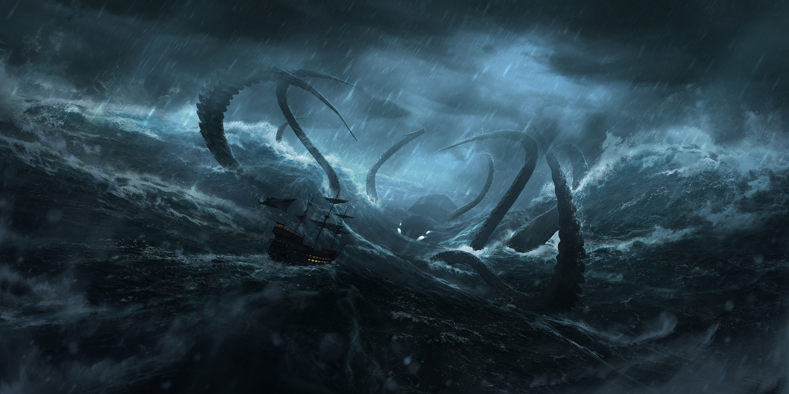

Final Project Proposal
Project Title: The Mystic Sea: An Interactive Particle Simulation

Image source: Alpha
Coders
Summary: Centered on advancing particle simulation within a computer graphics framework, our project aims to craft a technically sophisticated scene. We plan to feature fluid dynamics and shader effects to simulate water, fog, and smoke. Additionally, we hope to delve into animation and interactive elements, including a dynamically moving sea monster and boat. While excited about incorporating storytelling elements, our primary focus lies in overcoming technical challenges and fostering innovations, especially in fluid simulation and shader development, to achieve both realism and striking visual appeal.
Team Members: Jiahui Zhang, Yuan Xu, Yunting Zhao, Zoe Zhou
Problem Description
Problem Description: Our project confronts two primary challenges within the realm of computer graphics and particle simulation. Firstly, we aim to explore the complex interaction between water and wind, focusing on how these dynamics influence and collide with objects within the sea environment, specifically a sea monster and a boat. This involves developing a robust simulation that can accurately model fluid dynamics and physical interactions. Secondly, we seek to innovate in the area of animation tracking. We will be performing Inverse Fast Fourier Transform and the result will be heightmap. Our goal is to create a seamless and intuitive animation track for the camera movement that harmoniously interacts with the independent animations of the objects in the scene, including the sea monster and the boat. These challenges are significant as they require a deep understanding of physics-based simulation and animation principles, pushing the boundaries of realism and interactivity in computer graphics.
Goals and Deliverables
Our project aims to create an interactive and visually captivating scene through advanced particle
simulations, focusing primarily on fluid dynamics.
Baseline Deliverables:
- Creation of a realistic fluid simulation representing the sea.
- Implementation of a fixed camera perspective.
- Inclusion of a static object that interacts with the fluid simulation to demonstrate collision and fluid dynamics.
- Development of a basic cloth simulation to represent sail interaction with wind, demonstrating the effects of wind on flexible materials.
- Introduction of a moving sea monster, adding complexity and interaction with the water.
- Integration of a moving boat, showcasing dynamic interaction with the fluid environment.
- Development of dynamic camera movements to enhance storytelling and visual engagement.
- Exploration and implementation of advanced shaders for added realism, including techniques like bump mapping and enhanced lighting effects.
- Effective implementation of fog and smoke simulations, enhancing the scene's atmospheric depth.
- High-quality visual effects achieved through advanced shaders, bump mapping, and lighting, contributing to the scene’s realism.
- User feedback and technical assessment of the immersive quality, realism, and performance of the final scene.
Schedule
Our project schedule is structured to align with the key milestones and deadlines:
Week 1 (April 1th - April 7th):
- Project kickoff and initial planning.
- Begin development of fluid simulation for sea.
- Set up fixed camera perspective.
- Continue development of fluid simulation.
- Introduce a static object to interact with the fluid.
- Prepare and submit the Graded Milestone report.
- Review and incorporate feedback from Milestone.
- Further refine the fluid simulation and static object interaction.
- Start work on fog and smoke simulations (if time permits).
- Begin aspirational goals if baseline deliverables are met.
- Implement dynamic elements: moving sea monster and boat (if baseline completed).
- Explore advanced shader techniques (if baseline completed).
- Finalize the Final Deliverables.
- Final meeting
- Submit Final Deliverables (Report & Video).
- Prepare for final presentations.
- Final Presentations on May 2nd and 3rd.
Week 1 Task Allocation
| Zoe's Tasks | Jiahui's Tasks | Yuan's Tasks | Yunting's Tasks | Team Tasks |
|---|---|---|---|---|
|
|
|
|
|
Week 2 Task Allocation
| Zoe's Tasks | Jiahui's Tasks | Yuan's Tasks | Yunting's Tasks | Team Tasks |
|---|---|---|---|---|
|
|
|
|
|
Week 3 Task Allocation
| Zoe's Tasks | Jiahui's Tasks | Yuan's Tasks | Yunting's Tasks | Team Tasks |
|---|---|---|---|---|
|
|
|
|
|

Week 4 Task Allocation
| Zoe's Tasks | Jiahui's Tasks | Yuan's Tasks | Yunting's Tasks | Team Tasks |
|---|---|---|---|---|
|
|
|
|
|
Response to Feedback:
Feedback from TA - Anjali Thakrar:Your proposed implementation, deliverables, and stretch goals were all very clear. Your timeline looks great and leaves plenty of room for implementing extra features or fixing unexpected bugs. I really like this idea and think it will lead to really exciting and dramatic sea renderings.
A couple thoughts:
Success metrics:
I appreciate that you included these metrics! It’s incredibly important to map out prior to
implementation in order to have a shared, clear idea of your end product.
One of your success metrics is “Effective implementation of fog and smoke simulations, enhancing the scene's atmospheric depth.” (It is a visual metric and we are planning to learn and simulate it. This is our aspirational goal, lower priority than finishing the basic scene setup, which is the water simulation.)
You also mention user feedback. How do you plan to get this feedback? Will that be an internal qualitative metric for your team, or will you be using this for an in-depth analysis of your rendering quality?
How do you plan to model your fluid simulation? Some popular frameworks are FLIP, MPM, PIC, and SPH, but you’re welcome to use anything that excites you!
What’s your starting point? Will you be building this from scratch, extending a class HW, or adding to an existing codebase? (Our initial plan is to use Unreal and learn the fluid simulation part of it. We won't be starting from scratch because there is already a full-fledged simulator in Unreal, but we want to build our own ocean in it using graphic script to simulate very realistic effects and interactivity!)
Milestone feedback
Great work on your milestone deliverables for the Pixel Pirates. Your visuals are very exciting and dramatic. I suggest adding audio to your next video presentation. I also suggest that you are crisply showing what you started with, and what you built yourselves. For example, did you create the models from scratch, or find them online? Is the ocean simulator used from Unreal out-of-the-box, or are you making any modifications? How does the boat interact with the water? I recommend more actively distilling out the conclusions of what you learned and presenting these explicitly -- up front, developed throughout the talk, and reiterated at the end. I also encourage you to incorporate increased technical complexity - this may be creating new shaders or more complex simulation schemes. Excited to see what you build for your final demo!
Techniques Explanation
Wave Simulation: We use FFT-based method to simulate waves by generating (angular) frequencies and amplitudes and transforming these parameters into discrete point values with Inverse Fast Fourier Transform. To simulate the height space (2D space), we need to apply Row Pass and Column Pass (IFFT applied to rows and columns) for 2D Inverse FFT. Then, we can use bilinear interpolation to get the continuous point values in 2D height space. At last, we add a displacement shader upon the height field to simulate the sharp crease of waves.
Buoyancy: We try to compute the buoyancy (forces) by sampling. We take 12 samples from points beneath the boat model and use the normal vector of the wave as the force direction at the sample points. The normal vectors can be found in displacement shader after Inverse Fast Fourier Transform.
Collision: Ocean surface (waves) simulated by plane meshes (as we talked above) often meet such "Water-in-Boat" problem: EITHER the wave plane cut into the model with concave surface (looks like water has come into the boat) OR the model must be completely upon the wave surface. To solve this problem, we can simulate the actual collision of the fluid with particle models (e.g. FLIP model). But it is inefficient since too many particles are created for the large amount of cells in the 3D space since ocean often has large surface area and significant depth. Our solution is to simulate the ocean around the collision objects with FLIP model and try to blend the result with the ocean surface simulated by FFT-based wave model. One is inefficient but more accurate, the other is efficient but inaccurate. So, a trade-off between these two models is good deal in ocean simulation.
Animation and Camera: Animation can be simulated by setting control points (6 dimensional information, including the 3D position and direction), and then deriving the curve by spline interpolation (e.g. Bezier curves from de Casteljau Algorithm).
Problems Encountered in Implementation
We initially chose to simulate a realistic ocean within Unreal Engine because we knew that it could produce very realistic and visually appealing ocean effects. However, our team underestimated the time required for this project. We spent a significant amount of time understanding how Unreal Engine operates and the Niagara system. Ultimately, this effort did yield good real-time rendering results. During our study of Unreal Engine, we also encountered creative challenges related to the project. For the implementation of the ocean, we referred to numerous online tutorials. We explored the Niagara 3D grid flip pool feature within Unreal Engine, which allowed us to set up fluid surfaces by adding our own velocities and forces. Midway through the project, we experienced heightened anxiety, questioning whether we had chosen the right framework initially, as a considerable amount of time was spent watching tutorial videos and grappling with issues related to understanding Unreal, project builds, and computer crashes. We felt that this time could have been better spent exploring more meaningful fluid dynamics issues. Nevertheless, we ultimately decided to continue our project using both FFT-based wave simulation and FLIP fluid model, as it allowed us to more easily complete other simulation components and achieve better visual support. Many of the ocean tutorials we found did not conform to physical realities; they simply simulated the motion of the waves based on their appearance. We aimed to model the true fluid dynamics of the ocean, taking into account forces such as buoyancy, gravity, and wind. In the end, we modified the buoyancy calculations ourselves. By comparing the before and after, we now can take into account the density of small boats to achieve a more realistic simulation of ocean surface motion.
Lessons Learned
For our team, learning about how to calculate buoyancy and the interaction of objects was quite interesting. We also enjoyed exploring the aspects of materials and realized that to ultimately produce visually appealing images/videos, many factors need to be considered and much planning is required. Game engines require a lot of time to master and understand; they can deliver excellent final results but also limit our ability to think and innovate as many features are already pre-existing. During the project, we had many small but interesting discussions related to game engine and CG. For instance, while working on the boat model, we explored options for convex and concave colliders and understood why game engines do not offer concave as the default option. These minor explorations and learning experiences definitely deepened our overall understanding of computer graphics. Overall, we thoroughly enjoyed our project in the last four weeks and had a great time working together.
Demo Preview
Resources
Learn how to write a FLIP water / fluid simulation
Learn how to write a FLIP water / fluid simulation:
Animating Wave Motion using Gerstner Waves
Wooden Texture (Extended Application of Musgrave Texture)
Musgrave Texture was actually removed from Blender roughly a few months ago in Blender 4.1, but we were using Blender 3.1.
Water simulation: